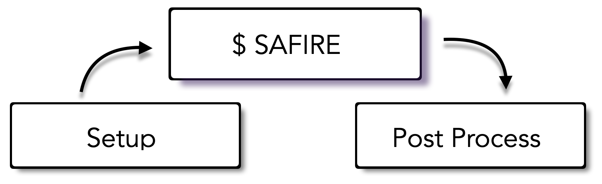
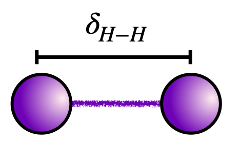

Download this notebook (.ipynb + data files)
3. Writing a Hamiltonian File#
Goal: Become acquainted with how to write a Hamiltonian to the SAFIRE HDF5 format.
3.1. What you will learn#
How to write a Hamiltonian to the SAFIRE HDF5 format starting from one-body, and two-body integrals
How to convert from a FCIDUMP file to the SAFIRE HDF5 format both using the CLI tools and within a Python script
(For convenience) How to use PySCF and afqmctools to generate and write the Hamiltonian
3.2. Introduction#
In previous tutorials, we learned how to run SAFIRE, and how to post process the results to arrive at the AFQMC energy. Now, we will learn how to write a Hamiltonian in SAFIRE’s HDF5 format.

In this tutorial, we will compute the ground state energy of the minimal basis hydrogen dimer with a bond length of 1.4 Bohr radii.

Run the following code block to setup the tutorial.
from pathlib import Path
from afqmctools.hamiltonian.mol import write_hamiltonian_generic
from afqmctools.wavefunction.mol import write_wfn
from afqmctools.inputs.from_hdf import write_json
from tutorial_utils import run_afqmc
scratch_dir = Path("data")
scratch_dir.mkdir(parents=True, exist_ok=True)
3.3. Setting up#
As we have seen in previous tutorials, the SAFIRE executable is implemented for generic second quantized Hamiltonians, and wavefunctions. Before we can run an AFQMC calculation, we must generate:
A Hamiltonian
A trial wavefunction
A json input file
Implicit in items 1. and 2. is the need for an orthonormal basis in which to compute matrix elements of the Hamiltonian, and to represent the trial wavefunction in terms of.
In this tutorial, we will use the set of canonical Hartree-Fock orbitals from RHF as a basis.
3.4. The Hamiltonian#
We are often interested in the electronic ground state of the Born-Oppenheimer Hamiltonian which is given in first quantization by
AFQMC is formulated in terms of the second quantized Hamiltonian. In second quantization, we express the Hamiltonian in terms of electronic creation/annihilation operators , \(\hat{c}^{\dagger}_i\) / \(\hat{c}_i\), which create/annihilate an electron in the chosen basis set orbitals, \(\{ \phi_i (\vec{r})\}\). The Hamiltonian takes the form,
Typically, an external quantum chemistry code will be used to generate integrals. For this tutorial, we will use the minimal basis Hydrogen dimer since it can be easily written down by hand. See, for example, section 3.5.2 in ref. 1.
The code block below contains the Hamiltonian for the \(H_2\) molecule at a bond length of \(\delta_{H-H} = 1.4\) Bohr radii in a standard sto-3g basis. Run the code block below to load the Hamiltonian into memory
Szabo, A., & Ostlund, N. S. (1996). Modern quantum chemistry: Introduction to advanced electronic structure theory. Dover Publications.
import numpy as np
from afqmctools.hamiltonian.mol import write_hamiltonian_generic
number_of_electrons = (1,1) # up, down
number_of_orbitals = 2
# all energy units are E_Hartree
# nuclear repulsion energy
H0 = 0.714285714285714
# One-Body Integrals in the basis of canonical RHF orbitals
H1_ij = np.array([[-1.25279706e+00, 0.0 ],
[ 0.0 , -4.75602313e-01]])
# two-body integrals in the basis of canonical RHF orbitals
H2_ijkl = np.zeros((2,2,2,2))
H2_ijkl[0,0,:,:] = np.array([[ 6.74976525e-01, 0.0],
[0.0, 6.63461552e-01]])
H2_ijkl[0,1,:,:] = np.array([[ 0.0, 1.81606342e-01],
[ 1.81606342e-01, 0.0]])
# equivalent by symmetry
H2_ijkl[1,0,:,:] = H2_ijkl[0,1,:,:]
H2_ijkl[1,1,:,:] = np.array([[6.63461552e-01, 0.0],
[0.0, 6.96162129e-01]])
# For reference, the RHF orbitals in the STO-3G basis are
# phi_i(\vec{r}) = \sum_\mu C_{\mu i} g_\mu (\vec{r})
phi_hf = np.array([[ 0.54893404, 1.21146407],
[ 0.54893404, -1.21146407]])
# and the STO-3G basis overlap matrix for $\delta_{H-H}=1.4 Bohr$ is
# Sij = <g_\mu | g_\nu>
Sij = np.array([[1., 0.65931821],
[0.65931821, 1. ]])
3.4.1. Save the Hamiltonian#
afqmctools provides Python functions for writing Hamiltonians in an HDF5 file that can be read by the SAFIRE executable as
shown in the code block below.
AFQMC uses a factorized form of the electron-electron interaction tensor,
Any decomposition of this form can be used in AFQMC. Density fitting integrals, for example can be written in this form. A typical strategy in the AFQMC literature is to perform a Cholesky decomposition of the super-matrix \(H^2_{(i,l),(j,k)}\) using a Cholesky tolerance of \(\delta_{Chol}\) where a smaller value of \(\delta_{Chol}\) produces a more accurate representation.
The Cholesky decomposition is automatically performed within write_hamiltonian_generic() if you
provide it with the electron Coulomb interaction tensor.
Alternatively, 3-index integrals (from density fitting, for example) can be provided to use
directly with no further modifications.
Run the following codeblock to output the Hamiltonian to an HDF5 file.
write_hamiltonian_generic(
filename=scratch_dir/"hamil.h5",
E0=H0,
H_one_body=H1_ij,
coulomb_repulsion_tensor=H2_ijkl
)
3.5. The Trial Wavefunction#
We will explore how to write trial wavefunctions in Writing a Trial Wavefunction. In general, the trial wavefunction is a linear combination of Slater determinants,
For now, simply run the next code block to save the RHF ground state in the same HDF5 file as the Hamiltonian.
import numpy as np
from afqmctools.wavefunction.mol import write_wfn
from afqmctools.inputs.from_hdf import write_json
# RHF orbtials represented in the basis of RHF orbitals
orbitals = np.array(
[[1.0,0.0],
[0.0,1.0]]
)
phi_0 = np.array([
orbitals[:, :number_of_electrons[0]]
])
C_0 = 1.0
wfn = ( np.array([C_0]), phi_0)
write_wfn(
filename=scratch_dir/ "wfn.h5",
wfn=wfn,
walker_type="rhf",
nelec=number_of_electrons,
norb=number_of_orbitals
)
write_json(scratch_dir / "afqmc.json", scratch_dir / "wfn.h5", scratch_dir / "hamil.h5", exec_opts=dict(timestep=0.005, steps=20000))
3.6. Your Turn: Compute the AFQMC energy#
At this point, you should run an AFQMC calculation using SAFIRE
as we covered earlier in Hello SAFIRE,
and use afqmctools to obtain the AFQMC energy.
As a reminder, you can run SAFIRE in any of the following ways:
the
run_afqmc()convenience wrapper - we’ve included a template in the next code cell.run from the command line as
$ mpirun -np [number of MPI tasks] safire --filenames [input file].json(if you are running on a computing cluster) submit a job via a runscript.
As an additional reminder, the analyze_scalar_data tool can be invoked by either
calling it from the CLI as
$ scalar_stats [id].s[series].scalar.datin a Python script / notebook with
analyze_scalar_data()- we’ve also included a template in a code block below that you can use for this exercise.
# Use this to run SAFIRE
run_afqmc(
run_dir=scratch_dir,
input_file = "afqmc.json",#"your_input_file.json",
np=16, # number of MPI tasks
output_file=None,
)
from stats.scalar_dat import analyze_scalar_data
settings = dict(
fname = scratch_dir/"qmc.s000.scalar.dat",
xaxis = "time",
nequil = 5, # remember to check the equilibration!
trace = True
)
E, dE = analyze_scalar_data(settings)
E_exact = -1.1372759436170439
(E-E_exact)/dE
3.6.1. Check your result#
Your AFQMC energy should agree with \(-1.137024 \pm 0.000195\) Ha to within 1-2 \(\sigma\).
For comparison, the FCI energy is \(-1.1372759436170439\) Ha.
Our AFQMC result agrees FCI to within 0.0003(2) Ha which is well within chemical accuracy.
3.7. Starting from a FCIDUMP#
afqmctools provides tools to convert from a Hamiltonian in a standard
FCIDUMP file to the format used by SAFIRE.
We will continue with the example of a Hydrogen dimer in an STO-3G basis to demonstrate the tooling.
Instructions for generating a FCIDUMP are beyond the scope of this tutorial; however, quantum chemistry codes that can easily generate FCIDUMP files are ubiquitous.
For simplicity, we provide a FCIDUMP file which, starting from the GitHub repo root, can be found in,
tutorial/molecules/03_writing_a_hamiltonian/files/H2_FCIDUMP
3.8. CLI: Covert from FCIDUMP to the SAFIRE format.#
The fcidump_to_afqmc CLI script can be used to directly convert
from a FCIDUMP file to the HDF5 format used by SAFIRE.
If you follow the official installation instructions for afqmctools, then
fcidump_to_afqmc should already be installed.
It can be used as
!fcidump_to_afqmc -i files/H2_FCIDUMP -t 1.0e-5 -o data/H2_Hamiltonian.h5
which reads the “input” (-i) Hamiltonian from H2_FCIDUMP,
performs a Cholesky decomposition with a tolerance (-t) of 1.e-5,
and saves the Hamiltonian to the “output” (-o) HDF5 file, H2_Hamiltonian.h5.
Additionally, you can use the --help option to see what other options are available.
Your Turn: Run the next code block to run see the help message
!fcidump_to_afqmc --help
3.8.1. CLI: Also write a trial wavefunction#
The next input that we will need for AFQMC is a trial wavefunction.
The fcidump_to_afqmc CLI script can also write either an RHF- or ROHF-like
trial wavefunction to the SAFIRE HDF5 file.
The wavefunction is a single Slater determinant in which the first \(N_{\uparrow}\)/\(N_{\downarrow}\) by index
orbitals are occupied.
\(N_{\uparrow}\) and \(N_{\downarrow}\) are determined by the information in the header of the FCIDUMP file.
It is also possible to explicitly specify orbital occupancies with the --occ_up and --occ_down switches.
3.8.2. Your Turn#
Run the following codeblock to output the Wavefunction to an HDF5 file via the CLI.
# Use the Command Line Interface (CLI) to convert the Hamiltonian AND write a trial wavefunction
!fcidump_to_afqmc -i files/H2_FCIDUMP -o {scratch_dir}/H2.h5 --add_wfn --occ_up 0 --occ_down 0
3.9. Python: Covert from FCIDUMP to the SAFIRE format.#
The afmctools Python package provides the following functions which allow us to convert form FCIDUMP to
the SAFIRE format.
read_fcidump()in theafqmctools.hamiltonian.convertermodulewrite_hamiltonian_generic()in theafqmctools.hamiltonian.molmodule
3.9.1. read_fcidump()#
The read_fcidump() function reads the Hamiltonian from the FCIDUMP file
with name filename, and separately returns the 1-body, 2-body, and constant Hamiltonian
terms as well as the number of electrons.
from afqmctools.hamiltonian.converter import read_fcidump
H1_ij, H2_ijkl, E0, _ = read_fcidump(
filename="H2_FCIDUMP"
)
see the API documentation for more
3.9.2. write_hamiltonian_generic()#
As we saw above, the write_hamiltonian_generic() function will generate an HDF5 file that can
be read by the SAFIRE executable containing the Hamiltonian.
It will automatically generate a Cholesky decomposed form of the interaction if electron-repulsion integrals are provided via the coulomb_repulsion_tensor keyword argument.
Alternatively, any 3-index factorized form of the electron interaction can be provided
via the cholesky_vectors input parameter.
Exactly one of cholesky_vectors or coulomb_repulsion_tensor must be provided to
write_hamiltonian_generic().
import numpy as np
from afqmctools.hamiltonian.mol import write_hamiltonian_generic
# transopose to match conventions for write_hamiltonian_generic
H2_ijkl = numpy.transpose(H2_ijkl,(0,1,3,2))
write_hamiltonian_generic(
filename=scratch_dir/"H2_hamiltonian.h5",
E0=H0,
H_one_body=H1_ij,
coulomb_repulsion_tensor=H2_ijkl,
cholesky_delta=1.0e-5
)
see the API documentation for more.
3.9.3. Your Turn: Run the following code block to convert from the provided FCIDUMP file to the SAFIRE format#
import numpy as np
from afqmctools.hamiltonian.mol import write_hamiltonian_generic
from afqmctools.hamiltonian.converter import read_fcidump
H1_ij, H2_ijkl, E0, _ = read_fcidump(
filename="files/H2_FCIDUMP"
)
# transopose to match conventions for write_hamiltonian_generic
H2_ijkl = np.transpose(H2_ijkl,(0,1,3,2))
write_hamiltonian_generic(
filename=scratch_dir/"H2_hamiltonian.h5",
E0=E0,
H_one_body=H1_ij,
coulomb_repulsion_tensor=H2_ijkl,
cholesky_delta=1.0e-5
)
3.10. Generate and write the Hamiltonian using PySCF and afqmctools#
Instead of defining the Hamiltonian and the wavefunction from scratch, one can also utilize PySCF to obtain the Hamiltonian in a given basis (in this case, the molecular orbital basis) and the trial wavefunction.
Here, we use PySCF to run RHF for the hydrogen dimer and export to a chkfile h2_rhf.h5, then use afqmctools to obtain the Hamiltonian and the trial wavefunction from the chkfile.
After this, you may follow the same steps as above to run AFQMC.
from pyscf import gto, scf
# build the H2 dimer
xyz = "H 0. 0. 0.; H 0. 0. 1.4"
mol = gto.Mole(unit = "Bohr",
atom = xyz,
precision = 1e-6,
basis = "sto-3g")
mol.build()
# run RHF
mf = scf.RHF(mol)
mf.chkfile = f"{scratch_dir}/h2_rhf.h5"
mf.kernel()
from afqmctools.utils.pyscf_utils import load_from_pyscf_chk_mol
from afqmctools.wavefunction.mol import write_wfn_mol
from afqmctools.hamiltonian.mol import write_hamil_mol
# reload the mf data
mf_data = load_from_pyscf_chk_mol(f"{scratch_dir}/h2_rhf.h5", 'scf')
# dump the Hamiltonian and the wavefunction to the same h5df
fout = f"{scratch_dir}/h2_from_pyscf.h5"
write_hamil_mol(
mf_data,
fout,
chol_cut=1e-6,
real_chol=True,
verbose=True
)
write_wfn_mol(
mf_data,
fout,
basis_scf_data=mf_data
)
3.11. Summary#
In this tutorial, you set up and ran a quantum chemistry AFQMC calculation in which we computed the ground state energy of the Hydrogen dimer at a fixed bond length.
The AFQMC code needs a Hamiltonian, a trial wavefunction, and a file containing settings as input, and it outputs stochastic samples as specified in the input file.
3.11.1. What you learned#
How to write a Hamiltonian to the SAFIRE HDF5 format starting from one-body, and two-body integrals
How to convert from a FCIDUMP file to the SAFIRE HDF5 format both using the CLI tools and within a Python script
3.11.2. Sample Script - Full workflow#
Below is a single script based on what you have learned.
from pathlib import Path
import numpy as np
from afqmctools.hamiltonian.mol import write_hamiltonian_generic
from afqmctools.wavefunction.mol import write_wfn
from afqmctools.inputs.from_hdf import write_json
from stats.scalar_dat import analyze_scalar_data
from tutorial_utils import run_afqmc
scratch_dir = Path("data")
scratch_dir.mkdir(parents=True, exist_ok=True)
number_of_electrons = (1,1) # up, down
number_of_orbitals = 2
# all energy units are E_Hartree
# nuclear repulsion energy
H0 = 0.714285714285714
# One-Body Integrals in the basis of canonical RHF orbitals
H1_ij = np.array([[-1.25279706e+00, 0.0 ],
[ 0.0 , -4.75602313e-01]])
# two-body integrals in the basis of canonical RHF orbitals
H2_ijkl[0,0,:,:] = np.array([[ 6.74976525e-01, 0.0],
[0.0, 6.63461552e-01]])
H2_ijkl[0,1,:,:] = np.array([[ 0.0, 1.81606342e-01],
[ 1.81606342e-01, 0.0]])
# equivalent by symmetry
H2_ijkl[1,0,:,:] = H2_ijkl[0,1,:,:]
H2_ijkl[1,1,:,:] = np.array([[6.63461552e-01, 0.0],
[0.0, 6.96162129e-01]])
# For reference, the RHF orbitals in the STO-3G basis are
# phi_i(\vec{r}) = \sum_\mu C_{\mu i} g_\mu (\vec{r})
phi_hf = np.array([[ 0.54893404, 1.21146407],
[ 0.54893404, -1.21146407]])
# and the STO-3G basis overlap matrix for $\delta_{H-H}=1.4 Bohr$ is
# Sij = <g_\mu | g_\nu>
Sij = np.array([[1., 0.65931821],
[0.65931821, 1. ]])
# Save the Hamiltonian to HDF5
write_hamiltonian_generic(
filename=scratch_dir/"H2_hamiltonian.h5",
E0=H0,
H_one_body=H1_ij,
coulomb_repulsion_tensor=H2_ijkl
)
# make and save a trial wavefunction
orbitals = np.array(
[[1.0,0.0],
[0.0,1.0]]
)
phi_0 = np.array([
orbitals[:, :number_of_electrons[0]]
])
C_0 = 1.0
wfn = ( np.array([C_0]), phi_0)
write_wfn(
filename=scratch_dir/"H2_rhf_wfn.h5", # this is the name of the file that will be created
wfn=wfn,
walker_type="rhf",
nelec=number_of_electrons,
norb=number_of_orbitals
)
# make an input file
afqmc_execution_options = {
"timestep": 0.01,
"steps": 10000,
"population_control_interval" : 10, # in units of steps
"measure_interval_multiplier": 1, # in units of population_control_interval
"walker_ortho_interval" : 10 , # in units of steps
"n_walkers_per_mpi_task": 200,
"seed" : 42
}
write_json(
scratch_dir/ "H2_afqmc_input.json",
fham0=scratch_dir / "H2_hamiltonian.h5",
fwfn0=scratch_dir / "H2_rhf_wfn.h5",
exec_opts=afqmc_execution_options
)
# run afqmc
run_afqmc(
run_dir=scratch_dir,
run_mode="local_cpu",
input_file="H2_afqmc_input.json",
np=12, # number of MPI tasks
output_file=None # optionally direct output to file instead of here
)
# post process
settings = dict(
fname = scratch_dir/"qmc.s000.scalar.dat",
xaxis = "time",
nequil = 5,
trace = True
)
_ = analyze_scalar_data(settings)